أثر الاندماجات الضخمة المبكرة في التطور الكيميائي لمجرات شبيهة بدرب التبانة: رؤى من محاكيات NIHAO-UHD
الملخص
وجدت الأرصاد الحديثة لمجرة درب التبانة (MW) ازدياداً غير متوقع في انحدار تدرج معدنية الغاز المكوّن للنجوم في الفترة المحيطة بحدث اندماج Gaia-Sausage-Enceladus (GSE). ندرس هنا تأثير أحداث الاندماج المبكرة ( Gyr) والضخمة ()، مثل اندماج Gaia-Sausage-Enceladus في MW، في تطور تدرج معدنية الغاز البارد. ونستخدم مجموعة NIHAO-UHD من المحاكيات الكونية الهيدروديناميكية لمجرات بكتلة MW لدراسة تواتر الاندماجات المبكرة الضخمة وأثرها التفصيلي في مورفولوجيا الأقراص الغازية وكيميائها. نجد ازدياداً قوياً في انحدار تدرج المعدنية في الأزمنة المبكرة في المجرات الأربع كلها في عينتنا، وينشأ ذلك عن زيادة مفاجئة في حجم قرص الغاز البارد (حتى عامل قدره 2) مقرونة بإمداد من الغاز غير المخصب (أقل بمقدار dex مقارنة بالمجرة الرئيسية) من المجرات القزمة المندمجة. تؤثر الاندماجات في الغالب في أطراف المجرات وتؤدي إلى زيادة في كثافة سطح الغاز البارد تصل إلى 200% خارج kpc. وتؤدي إضافة الغاز غير المخصب إلى كسر الإثراء المتشابه ذاتياً للوسط بين النجمي وتسبب تخفيف الغاز البارد في أطراف المجرات. تقع النجوم المتراكمة وتلك التي تتشكل لاحقاً من الغاز المتراكم على مسارات مميزة مزاحة نحو قيم أدنى لـ [/Fe] و[Fe/H] مقارنة بنجوم المجرة الرئيسية. ونجد أن مثل هذه الاندماجات يمكن أن تسهم إسهاماً كبيراً في تكوين تسلسل ثان منخفض- كما يُرصد في MW.
keywords:
المجرة: البنية — المجرة: التطور — المجرة: الحركيات والديناميكيات — المجرات: التكوّن — المجرات: الوسط بين النجمي — الطرائق: عددية1 مقدمة
إن مجرتنا درب التبانة (MW) هي أفضل المجرات دراسة في الكون، وتوفّر بعضاً من أشد القيود صرامة على نماذج تشكّل المجرات (e.g., Guedes2011; Wetzel2016; Grand2017; Hopkins2018; Buck2020a). ولذلك فإن الفهم المتعمق لمكوّنات المجرة وتطورها الديناميكي ومسار تشكلها يحظى بأهمية كبيرة.
يضم الجسم الرئيسي للمجرة، أي القرص النجمي المدعوم بالدوران، مكوّنات أو جماعات متعددة عند تفكيكه في فضاء الكيمياء والحركيات والامتداد المكاني والعمر (e.g., Gilmore1983; Norris1985; Chiba2000; Nissen2010; Bovy2012; Haywood2013)؛ وانظر Rix2013 وBland-Hawthorn2016 لمراجعات حديثة.
بفضل التحسن الكبير في جودة وحجم مجموعات البيانات الفلكية القياسية التي وفرتها بعثة Gaia (Gaia)، بالاقتران مع الوفرة الكيميائية والسرعات الشعاعية من مسوح طيفية كبيرة (مثل apogee؛ galah؛ h3؛ LAMOST؛ Majewski2017، Martell2017; Buder2021، Conroy2019، Zhao2012، على الترتيب)، أصبحنا الآن قادرين على تحديد البنى الكيميائية الديناميكية المتماسكة في MW وربطها بأحداث اندماج قديمة تعود إلى عدة مليارات من السنين في تاريخها (مثلاً Helmi2020 لمراجعة). وقد جرى حتى الآن تحديد عدد كبير من العناقيد الكيميائية الديناميكية المرتبطة إما بمكوّنات مميزة تكونت في موضعها وقت ولادة القرص النجمي في MW (e.g. Belokurov2022; Conroy2022; Rix2022) أو بأنظمة متراكمة مميزة، وذلك في الفضاء عالي الأبعاد للمعلمات المدارية والوفرة النجمية (e.g., Myeong2019; Naidu2020; Horta2021; Buder2022).
وأبرز ما في الأمر وجود فائض من النجوم على مدارات شعاعية في الهالة النجمية المحلية حول الشمس، وغالباً ما يُشار إليه باسم Gaia-Sausage-Enceladus (GSE؛ Belokurov2018; Helmi2018؛ وانظر أيضاً Nissen2010; Koppelman2018; Haywood2018). وقد حُددت هذه الزيادة النجمية بوصفها البصمة الرصدية لحدث تراكم ضخم ( ) ومبكر (قبل Gyr؛ مثلاً Vincenzo2019; Belokurov2020; Naidu2021; Xiang2022). ويُعتقد إلى حد بعيد أن GSE هو أهم اندماج في تاريخ MW، وقد أسهم بنحو ثلثي نجوم هالة MW الموجودة على مدارات شديدة اللامركزية (e.g. Mackereth2020). وتشغل نجوم GSE توزعاً شبيهاً بالنقانق في توزيع السرعات الشعاعية-السمتية (Brook2003; Belokurov2018)، وتبدو أفقر بالمعادن وأقل تعززاً بـ من نظيرتها الأكثر احمراراً في الهالة (Haywood2018; Helmi2018). ويُعتقد أن التسلسل الأكثر احمراراً في الهالة المجرية ناتج عن قذف نجوم القرص البدائي مجرياً إلى الهالة ديناميكياً أثناء اندماج GSE، وقد ارتبط بحدث سُمّي الرذاذ بواسطة Belokurov2020; Bonaca2020 وكان قد عُثر عليه أولياً في دراسات أقدم أخرى (Bonaca2017; Haywood2018; DiMatteo2019; Gallart2019).
إن وجود اندماج GSE وتأثيره القوي في بنية MW البدئية يتطلبان دراسة متأنية للعمليات التي تشكل التطور الكيميائي الديناميكي لـ MW أثناء مثل هذا الاندماج من أجل تفسير البيانات الرصدية المتاحة. ولربط المرصودات في الزمن الحاضر بأحداث عمرها Gyr نحتاج إلى أدوات مثل المحاكيات الكونية التي تمثل نمو الكتلة المجرية، والاندماجات، والتشكل النجمي اللاحق، والإثراء الكيميائي على نحو متسق ذاتياً. وهنا يتمثل أحد المتطلبات الأساسية لتتبع ديناميكيات القرص الداخلية وكبح التسخين الزائف، وكذلك حل البنية المتعددة الأطوار والكثيفة للوسط بين النجمي (ISM)، في توفر دقة كافية (؛ مثلاً Sellwood2013; Ludlow2019; Ludlow2021). وفي الوقت نفسه يلزم نموذج ملائم للإثراء الكيميائي (e.g. Buck2021) لالتقاط حركيات ولادة النجوم بدقة (مثلاً Ratcliffe2022; Lu2022) والتطور الديناميكي اللاحق للقرص (مثلاً House2011; Bird2013; Buck2020a).
وبفضل التطورات الحديثة في القدرة الحاسوبية والتقدم في الطرائق العددية، تلبي محاكيات التكبير الكونية الحديثة هذه المتطلبات الآن، وهي قادرة على نمذجة مجرات منفردة بكتلة MW عبر أخذ عينات من بيئات وسيناريوهات تشكل متنوعة (مثلاً Sawala2016; Grand2017; Buck2020a; Font2020; Applebaum2021; Agertz2021; Bird2021; Khoperskov2022-InSitu). ويتيح لنا ذلك إعادة بناء تاريخ تشكل مجرتنا بربط ظهور الأنماط الكيميائية الديناميكية عند بأحداث محددة في تطور المجرة (e.g. Bignone2019; Fattahi2019; Grand2020; Elias2020; Dillamore2022; Khoperskov2022a; Rey2022).
ومع أن التأثير القوي لـ GSE في الهالة النجمية لـ MW راسخ جيداً، فقد بحثت دراسات أحدث أيضاً تأثيره الحاسم في تشكل القرصين الرقيق والسميك في MW (e.g. Grand2020; Ciuca2022; Orkney2022; Rey2023). وتشير هذه الدراسات إلى أن اندماج GSE شكّل بقوة القرص السميك في MW، بما يتفق مع سيناريوهات تشكل القرص السميك المستمدة من نتائج محاكاة مبكرة بواسطة Brook2004; Brook2006. وللاندماج الغني بالغاز أثر مزدوج في القرص النجمي لـ MW: (i) إذ يسخن جزءاً من نجوم القرص البدئي الموجودة، فيقذفها ديناميكياً إلى الهالة ويكوّن الرذاذ. (ii) كما يزوّد الاندماج المناطق المجرية المركزية بغاز جديد، مطلقاً دفعة تشكل نجمي (قد تحدث بعد أن يسبب أولاً توقفاً في تشكل النجوم؛ Vincenzo2019) تكوّن في النهاية القرص السميك الأصغر عمراً. وبعد الاندماج يتشكل القرص الرقيق بعد ذلك من تراكم الغاز الفقير بالمعادن على نحو من الداخل إلى الخارج ومن الأعلى إلى الأسفل (e.g., Bird2013; Minchev2013; Grand2018; Buck2020a). وباستخدام جماعات نجمية قرب نصف القطر الشمسي من بيانات APOGEE DR14، أكد Ciuca2021 هذه الصورة نوعياً.
لقد أصبح ممكناً حديثاً استنتاج أنصاف أقطار ولادة النجوم، ، في درب التبانة بطريقة خالية من النماذج. فقد وضع Minchev2018 تقنية جديدة بسيطة للحصول على في أي مجموعة بيانات رصدية ذات قياسات دقيقة للعمر والمعدنية. واستعادت هذه الطريقة في آن واحد وتطور معدنية القرص المجري مع نصف القطر والزمن، [Fe/H]، وذلك بتغيير ميل المعدنية بوصفه دالة في الزمن بحيث تبقى توزيعات الناتجة ذات معنى فيزيائي. ومؤخراً وجد Lu2022b أن علاقة خطية توجد بين تشتت المعدنية وتطور تدرج معدنية الولادة مع الزمن الكوني، مما يجعل تحديد متسقاً ذاتياً بالكامل. وقد فتحت نتائج العمل السابق طريقة جديدة لدراسة التطور الكيميائي الديناميكي لدرب التبانة، إذ بدلاً من الاعتماد على النمذجة الأمامية عبر الزمن الكوني (محاكاة كونية أو نمذجة شبه تحليلية)، يمكن الوصول إلى ذلك مباشرة من البيانات مع افتراضات قبلية قليلة بشأن تفاصيل الإثراء الكيميائي.
merger_ratios.py
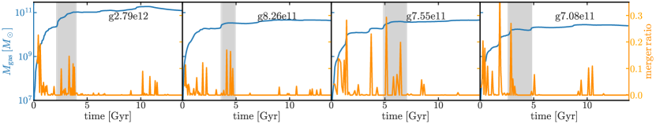
ومن اللافت أن Lu2022b وجد، عند استنتاج أنصاف أقطار ولادة نجوم قرص MW، ازدياداً في انحدار تدرج المعدنية عند زمن اندماج GSE باستخدام بيانات LAMOST DR7 مقترنة بـ Gaia eDR3. وعند تقييم التطور الكيميائي عبر أنصاف أقطار الولادة وزمن الرجوع باستخدام نجوم الفرع العملاق الأحمر القرصية من APOGEE DR17، أبلغ Ratcliffe2023 عن ازدياد مماثل في انحدار تدرج المعدنية قبل Gyr، مع ظهور اتجاه مشابه أيضاً في وفرات [X/H] أخرى. نستخدم هنا مجموعة NIHAO-UHD من المحاكيات الكونية الهيدروديناميكية لمجرات بكتلة MW (Buck2020a) لاستقصاء تأثير أحداث الاندماج المبكرة في الديناميكيات الكيميائية للقرص النجمي. وباستخدام 4 محاكاة مختلفة من مجموعة NIHAO-UHD نستقصي بيئات مأخوذة العينات بصورة مستقلة تتبع 4 سيناريوهات تشكل مختلفة. ونركز خصوصاً على تواتر الاندماجات المبكرة الضخمة وأثرها التفصيلي في تشكل القرص النجمي. بُنيت هذه الورقة على النحو الآتي: في § 2 نصف المحاكيات التي نستند إليها في تحليلنا، يتبع ذلك عرض لتأثير الاندماجات الضخمة المبكرة في تدرج معدنية قرص الغاز البارد في § 3. وفي § 4 ننتقل إلى تحليل المواضع التي تنتهي إليها نجوم وغاز الاندماج في علاقة العمر-المعدنية وفي مستوى [/Fe] مقابل [Fe/H] للمجرة الرئيسية. وفي § 5 و§ 6 نلخص نتائجنا ونختتمها.
2 المحاكيات
نستخدم في هذا العمل أربع محاكيات من مجموعة NIHAO-UHD (Buck2020a)، وهي جزء من مجموعة محاكيات الاستقصاء العددي لمئة جسم فلكي (NIHAO) (Wang2015). وقد اختيرت هذه المجرات 4 لأنها تمثل أكثر المجرات شبهاً بـ MW من حيث الكتلة والحجم وخصائص القرص. وقد استُخدمت أجزاء من مجموعة المحاكاة هذه سابقاً لدراسة بناء الانتفاخ ذي الشكل الفول السوداني في MW (Buck2018; Buck2019b)، واستقصاء خصائص الشريط النجمي (Hilmi2020)، واستنتاج لف هالة المادة المظلمة في MW (Obreja2022)، ودراسة مخزون المجرات القزمة في المجرات ذات كتلة MW (Buck2019)، أو استقصاء علاقة العمر-المعدنية لنجوم قرص MW (Lu2022)، بما في ذلك الثنائية الكيميائية لنجوم القرص (Buck2020)، ووفراتها (Lu2022a)، وأصل النجوم الشديدة الفقر بالمعادن داخل القرص النجمي (Sestito2021). وبمقارنة خصائص هذه المجرات مع أرصاد MW والمجرات القرصية المحلية من بيانات SPARC (Lelli2016)، أظهر Buck2020a أن خصائص المجرات المحاكاة تتفق جيداً مع الأرصاد.
half_mass_radius_metal_gradient.py
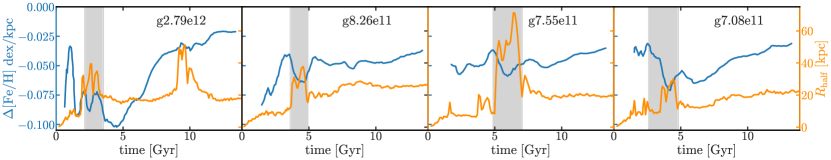
تفترض المحاكيات معاملات كونية من Planck، وهي: = 0.3175، = 0.6825، = 0.049، H0 = 67.1 Mpc-1، = 0.8344. وتُنشأ الشروط الابتدائية بالطريقة نفسها المتبعة في عمليات NIHAO الأصلية (انظر Wang2015) باستخدام نسخة معدلة من حزمة GRAFIC2 (Bertschinger2001; Penzo2014). وتتراوح دقة الكتلة لهذه المحاكيات بين لجسيمات المادة المظلمة و لجسيمات الغاز. أما التليينات القسرية المقابلة فهي pc للمادة المظلمة و pc لجسيمات الغاز والنجوم. غير أن مخطط طول التنعيم التكيفي يعني أن يمكن أن يصغر إلى pc في المستوى الأوسط للقرص. وتولد الجسيمات النجمية بكتلة ابتدائية قدرها وتخضع لفقدان الكتلة وفق نماذج التطور النجمي كما فصّل Stinson2013. يوصف إعداد المحاكاة وتنفيذ تشكل النجوم والتغذية الراجعة بالتفصيل في الورقة التمهيدية (Buck2020a)، لكننا نلخصها أدناه اكتمالاً للعرض.
أُجريت المحاكيات باستخدام حالِّ الهيدروديناميكيات الجسيمية الملساء (SPH) الحديث GASOLINE2 (Wadsley2017) مع تحديثات جوهرية للهيدروديناميكيات كما وصف Keller2014. ويطبق GASOLINE2 التبريد عبر الهيدروجين والهيليوم وخطوط معدنية متعددة تبعاً لـ Shen2010 باستخدام جداول بحث حُسبت بـ cloudy (الإصدار 07.02؛ Ferland1998)، وبما يشمل التسخين الضوئي من خلفية UV لدى Haardt200511 1 للحصول على تفاصيل عن تأثير خلفية UV في تشكل المجرات، انظر الدراسة الحديثة لـ Obreja2019. ويحدث تشكل النجوم في غاز بارد (T K) وكثيف (cm-3)، وينفذ كما وصف Stinson2006. وقد أظهر Buck2019a أنه مع هذا النوع من نماذج تشكل النجوم لا يستطيع إلا مقدار عالٍ من cm-3 (انظر أيضاً Dutton2019; Dutton2020, لدراسة موسعة للمعلمات) إعادة إنتاج تكتل العناقيد النجمية الفتية كما رُصد في Legacy Extragalactic UV Survey (LEGUS) (Calzetti2015; Grasha2017).
وتبعاً لـ Stinson2013 نُفذ نمطان من التغذية الراجعة النجمية: (i) إدخال الطاقة من النجوم الفتية الضخمة، مثل الرياح النجمية والتأين الضوئي، قبل أي انفجارات مستعرات عظمى، ولذلك يُسمى التغذية الراجعة النجمية المبكرة (ESF). ويتكون هذا النمط من اللمعان النجمي الكلي ( erg من الطاقة الحرارية لكل ) للجماعة النجمية كلها، مع كفاءة اقتران لإدخال الطاقة مقدارها (Wang2015). (ii) انفجارات المستعرات العظمى المنفذة باستخدام صياغة موجة الانفجار كما وصف Stinson2006، مع استخدام صياغة تبريد مؤجل للجسيمات داخل منطقة الانفجار تبعاً لـ McKee1977 من أجل احتساب التمدد الأديباتي للمستعر الأعظم. وأخيراً، اعتمدنا خوارزمية لانتشار المعادن بين الجسيمات كما وصفها Wadsley2008.
حُددت الهالات في محاكيات التكبير باستخدام كاشف الهالات الهجين MPI+OpenMP، AHF2 (Knollmann2009)، ونستخدم أداة شجرة الاندماج المرافقة لتتبع معرفات جسيمات المادة المظلمة كلها عبر الزمن وتحديد جميع الهالات السلفية لمجرة أو هالة مادة مظلمة معطاة عند الانزياح الأحمر . ثم يُجرى التحليل اللاحق لملفات شجرة الاندماج باستخدام حزمة ytree (ytree).
gas_profile_all.py
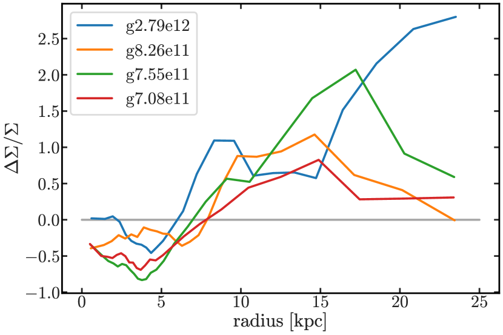
3 الأثر في تدرج معدنية الغاز البارد
3.1 تاريخ الاندماج
نبدأ تحليلنا لتأثير أحداث الاندماج الشبيهة بـ Gaia-Sausage-Enceladus في الديناميكيات الكيميائية لأقراص المجرات الشبيهة بـ MW بالنظر في تاريخ اندماج المجرات الأربع. يبيّن الشكل 1 النمو التراكمي لكتلة الغاز (الخط الأزرق، المحور الأيسر) مصحوباً بنسبة الاندماج الغازية (الخط البرتقالي، المحور الأيمن)، المعرفة بأنها نسبة كتلة الغاز في القمر المندمج إلى كتلة الغاز في المجرة الرئيسية مقيسة عند زمن الاندماج. ونرى أنه بعد طور ابتدائي ( Gyr) من النمو السريع في كتلة الغاز، مصحوب باندماجات عنيفة وغنية نسبياً بالغاز، توجد اندماجات أخرى عدة في أزمنة لاحقة تسهم بأكثر من 10% من الغاز (كما قيس عند زمن الاندماج)، مما يؤدي إلى قفزات مفاجئة في كتلة الغاز للمجرة الرئيسية (الخط الأزرق). وبخاصة في g2.79e12 (اللوحة اليسرى) وg7.08e11 (اللوحة اليمنى) نرى اندماجاً غنياً بالغاز في زمن متأخر ( Gyr)، في حين لا تُظهر g8.26e11 وg7.55e11 أي اندماج غني بالغاز بعد و Gyr، على الترتيب. ولغرض هذه الورقة نبرز أحداث الاندماج المهمة الغنية بالغاز، أي تلك التي تؤدي إلى زيادة قوية في حجم قرص الغاز البارد (انظر أيضاً الشكل 2)، بمناطق رمادية مظللة في الأشكال 1 و2 و4. ونلاحظ أنه قد توجد اندماجات أكثر غنى بالغاز، ولا سيما في الأزمنة المبكرة، لكن تركيزنا هنا منصب على الاندماجات بعينها التي تؤثر بشدة في حجم قرص الغاز البارد.
enrichment_evolution.py
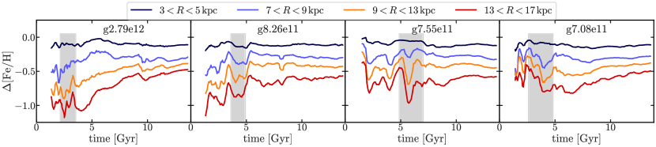
3.2 أثر الاندماجات الغنية بالغاز في تدرج المعدنية
تؤدي الزيادة المفاجئة في كتلة الغاز بسبب هذه الاندماجات الغنية بالغاز إلى زيادة مفاجئة في نصف قطر نصف الكتلة ( kpc) لقرص الغاز البارد في المجرة الرئيسية، كما تُظهر الخطوط البرتقالية (المحور الأيمن) في الشكل 2. وفي الشكل نفسه نرسم أيضاً تدرج معدنية قرص الغاز البارد للمجرة الرئيسية بوصفه دالة في الزمن (الخطوط الزرقاء، المحور الأيسر)، مقيساً بملاءمة خط مستقيم لمقطع المعدنية الشعاعي في المجال الشعاعي kpc. وقد اخترنا هذا المجال الشعاعي بحيث يشمل القرص المكوّن للنجوم لإبراز أثر تراكم الغاز في القرص المركزي. ونلاحظ أن هذا المجال الشعاعي يكون أحياناً أصغر من للغاز البارد أثناء أزمنة الاندماج، وهو ما قد يكون منحازاً إلى قيم عالية بسبب توزيع غازي غير كروي مثل الجسور وغيرها (انظر مثلاً الشكل 5). ولتقليل التقلبات على المقاييس الزمنية القصيرة نرسم المتوسط المتحرك بحجم نافذة قدره 10، وهو ما يقابل نافذة زمنية قدرها Myr.
نجد أن التطور الزمني لتدرج المعدنية في المجرات يُظهر سلوكاً معقداً إلى حد ما. فتُظهر المجرتان g2.79e12 وg8.26e11 تسطحاً سريعاً في تدرج المعدنية الابتدائي في الأزمنة المبكرة ( Gyr و Gyr)، من dex/kpc مبدئياً إلى dex/kpc، في حين تبدأ g7.55e11 وg7.08e11 أصلاً بتدرج ضحل قدره و. والمشترك بين المجرات الأربع كلها أننا نجد ازدياداً في انحدار تدرج المعدنية بما لا يقل عن dex/kpc على مدى إطار زمني قدره Gyr في الأوقات التي يزداد فيها حجم قرص الغاز بسرعة (المحددة بمناطق رمادية مظللة) بسبب كتلة الغاز المتزايدة من الأقمار المندمجة. وبعد حدوث الازدياد في الانحدار، يتسطح التدرج من جديد بمقدار dex/kpc على إطار زمني مماثل تقريباً، باستثناء g2.79e12 التي يستمر فيها التدرج بالازدياد في الانحدار بعد الاندماج حتى يبلغ قيمة عظمى قدرها dex/kpc. ولا يبدأ التدرج بعد ذلك إلا بعد Gyr أخرى بالتسطح سريعاً حتى الوقت الحاضر. أما التطور المتأخر للتدرج في المجرات الأربع كلها فهو ضعيف نسبياً، لكنه يستمر بصورة متسقة في التسطح مع انخفاض أقصى في التدرج قدره dex/kpc على مدى زمن قدره Gyr.
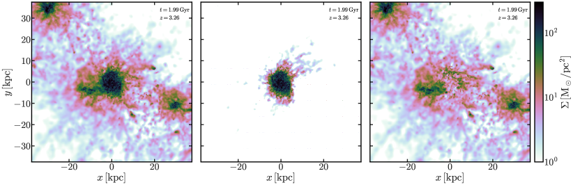
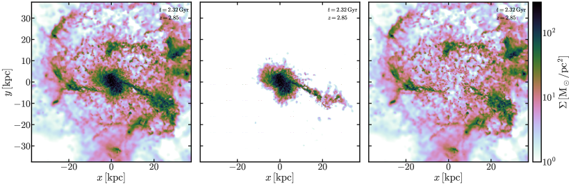
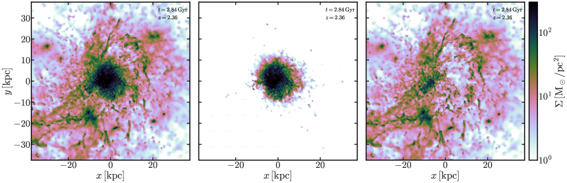
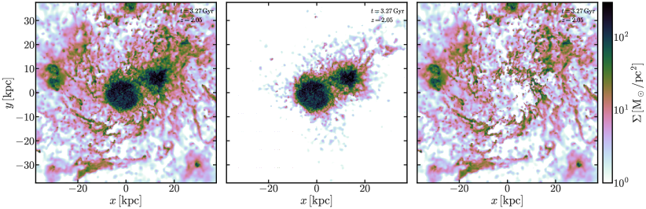
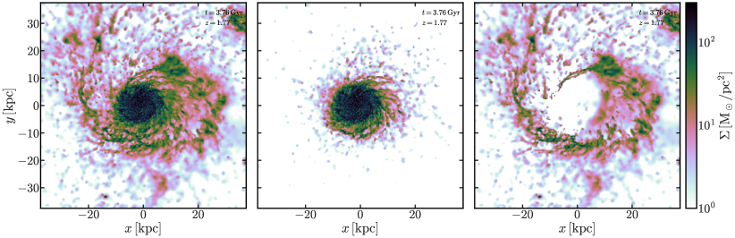
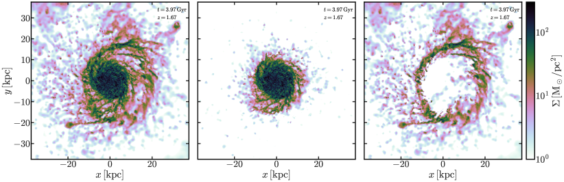
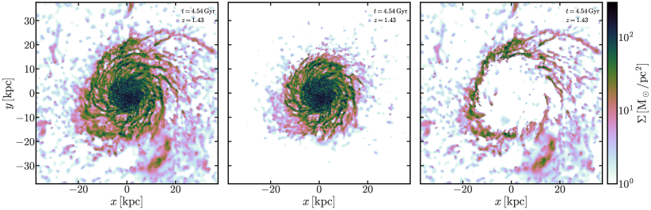
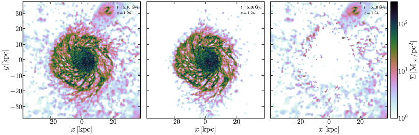
3.3 الآلية الفيزيائية وراء ازدياد انحدار تدرج المعدنية
إن الازدياد المفاجئ في انحدار تدرج المعدنية المجري أمر غير متوقع، وقد عُدّ (على حد علمنا) غير ممكن أو على الأقل لم يُدرس (e.g. Chiappini2001, لدراسة موسعة). وقد يكون السبب الفيزيائي لازدياد انحدار تدرج المعدنية هو: (i) تخفيف معدنية القرص الخارجي بالغاز الجديد غير المخصب الذي يجلبه القمر المندمج؛ أو (ii) الإثراء المستمر أو التفضيلي للمركز المجري؛ أو (iii) مزيج من الاثنين. وقد يُتوقع سيناريو التخفيف من الانخفاض العام في معدنية الأقمار منخفضة الكتلة مقارنة بالمجرات ذات كتلة MW، بسبب شكل علاقة الكتلة النجمية-المعدنية، وقد اقتُرح سابقاً لتكوين الثنائية الكيميائية في القرص النجمي لـ MW (e.g. Chiappini1997; Spitoni2019; Buck2020).
ولاستقصاء سبب الازدياد القوي في انحدار تدرج المعدنية في محاكياتنا، نرسم أولاً في الشكل 3 المواضع في القرص التي يسهم فيها الغاز المتراكم في الغالب. ويعرض الشكل 3 التغير النسبي في مقطع كثافة كتلة سطح الغاز البارد قبل الاندماج الغني بالغاز وبعد اكتمال الاندماج كما تشير إليه المناطق الرمادية المظللة في الشكل 2. ويكشف هذا الشكل نتيجة مثيرة للاهتمام. فعلى نحو متسق عبر المجرات الأربع كلها، تكون كثافة كتلة سطح الغاز البارد في kpc الداخلية ثابتة تقريباً أو تتناقص قليلاً بسبب استهلاك الغاز في تشكل النجوم وطرد الغاز بفعل التغذية الراجعة. وخارج kpc تزداد كثافة الكتلة السطحية بنسبة من % حتى % بسبب الغاز البارد المضاف بحدث الاندماج، إما بالتراكم المباشر للغاز البارد من القمر المندمج أو بتراكم غاز محفَّز من الوسط المحيط بالمجرة (CGM) بفعل القوى المدية التي يمارسها القمر المتفاعل. ونلاحظ أن كسر الزيادة يرتبط بقوة بنصف القطر. وقد ينتج تراكم الغاز الأقل إثراءً من CGM الأكثر سخونة عن تخثر الغاز البارد (الذي يمكن أن تكون بذرته الغاز البارد من الأقمار المندمجة أو غاز النافورة (e.g. Armillotta2016; Sparre2020) من مستعرات عظمى أو رياح نجمية سابقة) المحفَّز باضطرابات (جاذبية) (e.g. Gronke2022).
وفي الواقع، كما أظهر Buck2020 في شكلهم 8، فإن السيناريو (iii) يحدث في هذه المجرات. ففي معظم الوقت يكون تطور معدنية ISM/الغاز البارد متشابهاً ذاتياً ومتصاعداً تقريباً على نحو رتيب عند كل نصف قطر، ولكن مع أحداث تخفيف واضحة ترتبط بأحداث الاندماج (انظر أيضاً Sparre2022). ولاستقصاء ذلك بمزيد من العمق ودراسة أثره في تدرج المعدنية، نرسم في الشكل 4 الفرق في معدنية الغاز البارد، ، بين الغاز في حلقة معطاة عند نصف قطر والمعدنية في الأجزاء المركزية ( kpc) من المجرة، ، بوصفه دالة في الزمن. ومن ثم فإن الخطوط المستوية في الشكل 4 ستشير إلى تطور متشابه ذاتياً تماماً، وبالتالي إلى عدم تغير التدرج، في حين تشير القيمة الأكثر سلبية إلى أن نصف قطر معيناً يتأخر عن المجرة المركزية في إثراء [Fe/H]، وبالتالي إلى ازدياد انحدار تدرج المعدنية. ومن ناحية أخرى، تُظهر القيمة التي تصبح أكثر إيجابية تدريجياً أو أقل سلبية أن نصف القطر قيد النظر يزداد إثراءً بالمعدنية أكثر من الأجزاء المركزية، وبالتالي تشير إلى تسطح تدرج المعدنية (السالب). وبهذه الطريقة نبرز الانحرافات عن التطور المتشابه ذاتياً، وهي تشير إلى ازدياد انحدار تدرج المعدنية أو تسطحه كما يقاس عبر مجالات شعاعية مختلفة، ونستطيع فصل ما إذا كانت الأطراف أم الأجزاء المركزية هي التي تهيمن على تغيرات التدرج.
mdf.py
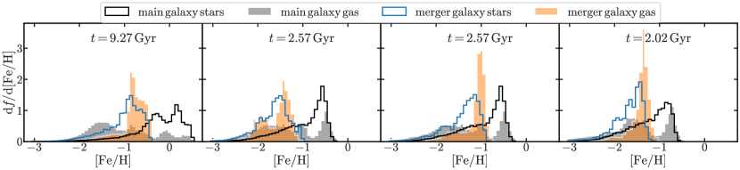
يكمل الشكل 4 نتائجنا من الشكل 2 ويبيّن أنه أثناء أطوار الازدياد القوي في انحدار تدرج المعدنية (المناطق الرمادية المظللة)، تكون أطراف المجرات خصوصاً (خارج الدائرة الشمسية، kpc) هي التي تتأخر عن الأجزاء المركزية في إثراء [Fe/H]. وبوجه عام، نجد أن الحلقة الداخلية بين kpc (الخط الأسود) تتطور على نحو شبه متشابه ذاتياً مع المجرة المركزية وتتأثر نسبياً بدرجة ضعيفة بالاندماجات. أما الحلقات الخارجية للمجرة (الخطوط الزرقاء والبرتقالية والحمراء) فتُظهر انحرافات/انخفاضات سلبية قوية عند أزمنة الاندماجات (قارن أيضاً بالشكل 1)، أو على نحو مماثل عند أزمنة الزيادة القوية في نصف قطر نصف كتلة الغاز البارد (انظر الشكل 2)، مما يشير إلى أن الغاز البارد المخصب بـ [Fe/H] عند هذه الأنصاف القطرية يتأثر بقوة بالغاز الأفقر بالمعادن الذي تجلبه المجرات القزمة المندمجة.
لقد صورنا هذه النتيجة الكمية من الشكل 4 برسم كثافة سطح الغاز البارد أثناء زمن الاندماج الغني بالغاز للمجرة g2.79e12 في الشكل 5 والشكل 5. وقد اختيرت اللوحات في الشكل 5 والشكل 5 بحيث تحدد الأزمنة قبل الاندماج (أي Gyr)، وأثناء حدث الاندماج والالتحام النهائي ( Gyr؛ الشكل 5)، وكذلك لبعض الوقت بعده لإظهار الانخفاض في كثافة سطح الغاز البارد بفعل استهلاك الغاز والتغذية الراجعة ( Gyr، الشكل 6). وفي هذه الأشكال نعرض في العمود الأيسر كثافة سطح الغاز البارد الكلية ونقسمها إلى مساهمة مخصبة () وأخرى غير مخصبة () في العمودين الأوسط والأيمن، حيث تحفز قيمة المعدنية الفاصلة لدينا بشكل MDF في الشكل 7. ويكشف هذا الشكل بوضوح كيف يجلب القمر المندمج جزءاً هائلاً من الغاز البارد غير المخصب الذي يستقر أساساً في أطراف قرص الغاز الموجود مسبقاً، كما رأينا في الشكل 4. وإجمالاً، يبقى سطح الغاز المرتفع غير المخصب في أطراف المجرة نحو 2.5-3 Gyr حتى يُستهلك غازه أو يسخن.
نلاحظ أنه بعد الاندماج تتسبب زيادة تشكل النجوم في أطراف المجرة في لحاق هذه الأنصاف القطرية سريعاً بإثراء [Fe/H] (انظر أيضاً الشكل 7 في Buck2020). علاوة على ذلك، يبيّن الشكل 2 أيضاً أن التسطح التدريجي لتدرج المعدنية في الأزمنة المتأخرة (النصف الثاني من عمر الكون) ينتج في الغالب عن إثراء تفضيلي/مرتفع للمجرة خارج الدائرة الشمسية. وفي الوقت نفسه أظهر Minchev2012a أن الغاز يهاجر بقوة أكبر حتى من النجوم الفتية، ومن ثم فإن مقداراً صغيراً من الغاز المهاجر إلى الخارج سيرفع كثيراً في القرص الخارجي.
4 الأثر في علاقة العمر-المعدنية وفي مستوى [/Fe] مقابل [Fe/H]
ننتقل الآن إلى استقصاء سؤال موضع ظهور النجوم والغاز المتراكمين بفعل الاندماجات في علاقة العمر-المعدنية وفي مستوى [/Fe] مقابل [Fe/H]. ولهذه الغاية نركز على المجرة g2.79e12، التي يكون فيها ازدياد انحدار تدرج المعدنية هو الأقوى، غير أن النتائج ممثلة أيضاً للمجرات الأخرى.
4.1 دالة توزيع المعدنية
يبيّن الشكل 7 دالة توزيع المعدنية (MDF) لكل الغاز (المدرج البرتقالي) والنجوم (المدرج الأزرق) داخل نصف القطر الفيروسي لأربعة أقمار غنية بالغاز تندمج مع المجرة الرئيسية عند Gyr و Gyr (اندماجان يحدثان في هذا الزمن) و Gyr، مقارنة بـ MDF الغاز (المدرج الرمادي) والنجوم (المدرج الأسود) في المجرة المركزية عند الأزمنة المقابلة. ويُعرض شكل مشابه لدالة توزيع [/Fe] في الشكل 10 من الملحق. وبالتركيز أولاً على المكوّنات النجمية (المدرجات الخطية)، نرى أن النجوم التي تسهم بها الاندماجات ذات معدنية أقل وسطياً بمقدار dex مقارنة بنجوم المجرة الرئيسية، مع أن ذيول التوزيعَين تتداخل عند أدنى المعدنيات (). وبالانتقال إلى المكوّن الغازي (المدرجات الممتلئة)، نجد أن (i) الغاز والنجوم في المجرات القزمة يمتلكان دوال توزيع معدنية متشابهة إلى حد ما، حيث يبدو الغاز أعلى معدنية قليلاً بنحو dex. أما MDF الغازية للمجرة الرئيسية فتُظهر قمتين تفصل بينهما نحو dex. وتمثل هاتان القمتان قرص الغاز المكوّن للنجوم عند معدنيات أعلى بين وغاز CGM عند معدنيات أدنى من . وبمقارنة MDF الغاز في الاندماج بتلك الخاصة بالمجرة الرئيسية نستعيد النتائج من المكوّن النجمي؛ إذ يمتلك الاندماج MDF تبلغ قمتها dex دون MDF قرص الغاز في المجرة الرئيسية، ومن ثم تتداخل على نطاق واسع مع قمة غاز CGM في المجرة الرئيسية. وهذا الفرق بالضبط في الإثراء المعدني، مقترناً بالإضافة التفضيلية للغاز المتراكم إلى أطراف المجرة، هو ما يسبب ازدياد انحدار تدرج المعدنية في الغاز المكوّن للنجوم في المجرة الرئيسية بنحو dex kpc-1 كما رُصد في الشكل 2، وذلك عبر خفض المعدنية في أطراف المجرة بمقدار dex كما يبين الشكل 4. ومن ثم فإن توقعنا هو أن اندماج GSE في MW لا بد أن امتلك معدنية أقل بالمثل عند زمن الاندماج مقارنة بقرص الغاز في MW، لكي يحقق ازدياداً في انحدار تدرج معدنية MW قدره dex كما قاس Lu2022b وRatcliffe2023.
4.2 علاقة العمر-المعدنية
age_feh.py
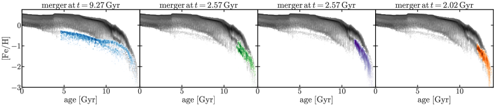
يبيّن الشكل 8 علاقة العمر-المعدنية لنجوم المجرة نفسها التي نوقشت في القسم السابق (مدرجات 2d الملونة) عند زمن قصير قبل الاندماج مع المجرة الرئيسية، مقارنة بعلاقة العمر-المعدنية لنجوم المجرة الرئيسية في الوقت الحاضر (مدرج 2d الأسود).
وبالتركيز أولاً على المجرة الرئيسية، نرى عدة مسارات/زيادات كثافة بارزة في علاقة العمر-المعدنية. ويتوافق الغلاف العلوي البارز مع المجرة الرئيسية. وعند الأعمار النجمية الكبيرة نرى أيضاً مساراً ثانياً عند معدنية أدنى، ينشأ من الغاز والنجوم المتراكمة بفعل الاندماجات الأسبق، كما يتضح من المدرجات الملونة التي تُظهر النجوم التي جلبها الاندماج إلى المجرة الرئيسية. ويلتحم هذا الفرع الثاني بفرع المجرة الرئيسية عند عمر نجمي يقارب Gyr، بعد انتهاء الاندماجات المبكرة الثلاثة كلها. ويحدث ذلك بعد وقت قصير من الزيادة السريعة في نصف قطر نصف كتلة الغاز البارد لهذه المجرة (قارن بالشكل 2)، وبعد أن امتزج الغاز أخيراً بغاز قرص المجرة الرئيسية. ومن اللافت، كما رأينا بالفعل في الشكل 7، أن علاقة العمر-المعدنية للاندماجات المبكرة الثلاثة لا تختلف كثيراً، بل تتداخل إلى حد كبير.
وأخيراً، كما نوقش سابقاً في Buck2020، تعرضت المجرة g2.79e12 لاندماج ضخم في زمن متأخر قبل Gyr. وتُعرض علاقة العمر-المعدنية لهذا الاندماج في اللوحة اليسرى من الشكل 8، وهي تشكل فرعاً ثالثاً بارزاً ومتميزاً إلى حد ما في علاقة العمر-المعدنية يقع بنحو dex دون مسار المجرة الرئيسية. ويتوافق هذا المسار مع الزيادة السريعة الثانية في نصف قطر نصف كتلة الغاز البارد كما يظهر في الشكل 2، والتي توقف تسطح تدرج المعدنية في الأزمنة المتأخرة. ويستمر هذا المسار حتى إلى أصغر النجوم عمراً، لأن الاندماج يقوم بمرورين حول الحضيض. ونلاحظ أن مسار هذا الاندماج نفسه ينقسم إلى مسارين عند أعمار نجمية قدرها Gyr، مما يشير إلى أن سلف هذه المجرة المندمجة كان هو نفسه قد تعرض لتفاعل في الكون المبكر. وعلاوة على ذلك نرى أنه عند زمن الاندماج تنحني علاقة العمر-المعدنية كلها للمجرة الرئيسية قليلاً إلى الأسفل. وقد نوقشت التفاصيل الرصدية لهذا الانحناء في Lu2022، وهي تشبه عن قرب نتائج حديثة لـ MW بواسطة Feuillet2019. وسنرى في القسم الفرعي التالي أن هذا الاندماج يسهم كثيراً في تكوين التسلسل منخفض- في هذه المجرة.
4.3 مستوى [/Fe] مقابل [Fe/H]
يقارن الشكل 9 مستوى [/Fe] مقابل [Fe/H] لنجوم المجرة الرئيسية (مدرج 2d الأسود) بالنجوم (مدرج 2d الملون في الصف العلوي) وبالنجوم المولودة من الغاز (مدرج 2d الملون في الصف السفلي) الذي جلبته المجرات القزمة المندمجة التي نوقشت سابقاً.
وعلى غرار علاقة العمر-المعدنية، نجد أيضاً عدة مسارات في مستوى [/Fe] مقابل [Fe/H]، وخصوصاً عند المعدنية المنخفضة. ومرة أخرى، ينتمي مسار الغلاف العلوي عند أعلى قيم [/Fe] إلى المجرة الرئيسية. وتوجد عدة مسارات بارزة تسير تقريباً موازية لهذا المسار الرئيسي لكنها عند [/Fe] أدنى لقيمة [Fe/H] ثابتة. وتنشأ هذه بفعل المجرات القزمة المندمجة كما تكشف المقارنة السريعة بالمدرجات الملونة. وإضافة إلى ذلك، نجد عند أدنى المعدنيات أشرطة خافتة أخرى تسير قطرياً من [/Fe] عالٍ عند معدنية أدنى إلى [/Fe] منخفض عند معدنية أعلى قليلاً. وتنشأ هذه الأشرطة من اندماجات مجرات قزمة أصغر لا تمثل محور هذه الدراسة. ومرة أخرى، نجد أن الاندماجات المبكرة الثلاثة كلها تشغل مواضع متقاربة في مستوى [/Fe] مقابل [Fe/H] كما هو متوقع من MDFs التي نوقشت في القسم السابق. ومن اللافت أن نجوم تلك الاندماجات لا تشكل إلا بداية هذه المسارات الثانوية. وبالنظر إلى اللوحات السفلى، التي تُظهر المواضع التي يسهم فيها الغاز الذي جلبته المجرات القزمة المندمجة في نجوم المجرة الرئيسية، نرى في الواقع أن استمرار تشكل النجوم من غاز الاندماج هذا يواصل المسارات إلى أن يمتزج الغاز أخيراً تماماً بالغاز الموجود مسبقاً في المجرة الرئيسية، ليسهم بعد ذلك في المسار الرئيسي عند أعلى قيم [/Fe] لقيمة معدنية معطاة.
وأخيراً، يوضح هذا الشكل كيف يحدد غاز ونجوم المجرات القزمة المندمجة مساراتها الخاصة في مستوى [/Fe] مقابل [Fe/H]. وعلى وجه الخصوص، تكون هذه المسارات مزاحة إلى قيم أدنى من [/Fe] و[Fe/H] بسبب علاقة الكتلة-المعدنية الأساسية للمجرات (e.g. Kirby2013). وبخاصة، يوضح الشكل بجلاء كيف أن الاندماج المتأخر حول Gyr يُدخل تقلبات في التدرج عند كل مرور حضيضي عند الأزمنة Gyr و Gyr، ويسهم إسهاماً كبيراً في تكوين التسلسل منخفض- في هذه المجرة. وقد عُثر حديثاً على مثل هذه التقلبات في التدرج بواسطة Ratcliffe وآخرين، عمل مقدم، وقد تُعزى إلى التفاعلات الحديثة بين MW ومجرة Sagittarius القزمة.
إن الدلالة الرصدية لنتائجنا هي أنه، مع لايقين في الوفرة منخفض بما يكفي كي لا يمحو مثل هذه السمات، قد نتمكن على الأقل من تحديد أكثر المساهمين كتلة في MW (كما بُرهن سابقاً، مثلاً Vincenzo2019; Belokurov2020; Naidu2021; Xiang2022) وقياس أثرهم في الجسم النجمي لـ MW. وللأسف، وجد Ratcliffe2022 أن هذه السمات المميزة اختفت بعد إضافة لايقين الرصد في الزمن الحاضر. كذلك يبين مثالنا لمجرتين قزمتين مندمجتين في الزمن نفسه تقريباً وتشغلان فضاءً متشابهاً في مستوى [/Fe] مقابل [Fe/H] (انظر الشكل 8) صعوبة فصل اندماج كبير واحد عن عدة اندماجات ذات كتلة أصغر. وبخاصة، لا تسمح لايقينات الأعمار الحالية بفصل اندماجات متعددة تحدث ضمن Gyr، كما لا تسمح بفصل الفرعين اللذين نراهما في AMR في الشكل 8 لكل من MW البدئية والاندماجات الشبيهة بـ GSE. وهذا مثير للاهتمام بوجه خاص، إذ اقترح Donlon2022 حديثاً أن سمة GSE قد تكون في الواقع ناتجة عن عدة اندماجات صغرى. ولذلك فإن تقليل لايقينات الأعمار في المسوح المستقبلية قد يساعد في كشف هذه السمة المهمة جداً في بيانات MW.
feh_ofe.py
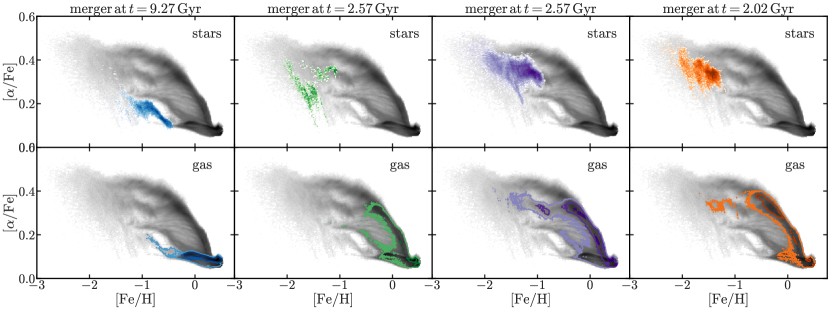
5 مناقشة
كما ذُكر سابقاً، يجد Lu2022a وRatcliffe2023 وWang وآخرون، عمل مقدم، ازدياداً في انحدار تدرج [Fe/H] النجمي قبل نحو Gyr. ويبدو تدرج معدنية شديد الانحدار لمثل هذه النجوم القديمة مفاجئاً، لأن النجوم القديمة عالية- في MW لا تُظهر أي تدرج معدنية مهم في الزمن الحاضر. وقد ترسخ الآن أن تدرجات [Fe/H] للجماعات أحادية العمر تتسطح بفعل الهجرة الشعاعية. ويكون هذا التسطح أوضح ما يكون في النجوم الأقدم، كما بيّن مثلاً Minchev2013. ومن ثم، فمع أن النجوم عالية-ألفا تمتلك اليوم تدرج [Fe/H] مسطحاً، فإن حوله تشتتاً كبيراً مرتبطاً بأثر الهجرة الشعاعية (انظر مثلاً Anders2017, الشكل 1). ولذلك لا يمكن الكشف عن طور ازدياد الانحدار هذا إلا باستخدام نصف قطر ولادة النجوم، لأن أي نوع من إعادة خلط المدارات، مثل الهجرة الشعاعية، سيمحو الإشارة في الزمن الحاضر.
نجد هنا، باستخدام أربع محاكيات هيدروديناميكية، أن الاندماجات المبكرة الضخمة يمكن أن تسبب ازدياداً في انحدار تدرج المعدنية، مما يدعم استنتاجاتهم بأن GSE كان المسؤول. فمن المتوقع بالفعل أن GSE كان اندماجاً كبيراً بنحو 4:1، أو 20% من كتلة MW (Helmi2018)، وعلى الأرجح كان غنياً بالغاز كما هو متوقع للاندماجات عند الانزياح الأحمر العالي. وقد أُجريت محاولة لتقدير كسره الغازي عند زمن الاندماج بواسطة (Vincenzo2019)، ووجدت قيمة قدرها 0.67.
ومن أوجه الاختلاف بين عملنا هنا وعمل Ratcliffe وآخرين وLu2022a أننا نجد أن تدرج الغاز يزداد انحداره في مجرتين من أصل أربع لمدة لا تتجاوز 1 Gyr قبل أن يبدأ بالتسطح من جديد، في حين يجد كل من Lu2022a وRatcliffe2023 أن تدرج المعدنية النجمي يزداد انحداره على إطار زمني قدره 2+ Gyr. ولا يُرصد مثل هذا الطور الطويل من ازدياد الانحدار إلا في المجرتين g2.79e12 وg7.08e11، وفيهما يكون طور التسطح أيضاً أطول مقارنة بالمجرتين الأخريين في عينتنا، ويمتد من زمن الاندماج حتى الوقت الحاضر. إن فهم دور الكتلة النسبية للاندماج وحجمه وسرعته ومعدنيته، وكذلك لايقينات العمر و[Fe/H] الرصدية، في تأثير هذا الإطار الزمني يتجاوز نطاق هذا العمل. ومع ذلك، تبرز الاستنتاجات المستخلصة هنا أثر الاندماجات في تدرجات معدنية الأقراص المجرية، وتوضح أن تدرج [Fe/H] في قرص MW لا يتسطح رتيباً مع الزمن كما افترضت بعض الأعمال السابقة (مثلاً Kubryk2015; Minchev2018).
يوحي الشكل 8 بأن تاريخ اندماج MW ينبغي أن يترك بصمة فريدة في AMR الخاصة بها. وقد حدد Ciuca2022 «انخفاضاً» وسمة قطرية تزداد في [Fe/H] مع الزمن الكوني، وسموها «الاندفاع النجمي المجري العظيم» في AMR المنزوعة الضجيج لـ MW. وتدعم نتائجنا استنتاجهم أن هذه السمات نتجت عن اندماج مبكر ضخم (GSE). ويناقشون أن هذه السمات تمثل مناطق مختلفة من القرص السميك (التسلسل عالي-). ونفهم الآن أن حلقة «الاندفاع النجمي» والانخفاض هذه ترجعان إلى اندماج الفرع الثاني مع فرع المجرة الرئيسية بعد انتهاء الاندماج المبكر.
إضافة إلى طور ازدياد الانحدار الرئيسي مباشرة بعد اندماج مبكر ضخم، نجد أطوار ازدياد انحدار إضافية في تدرج [Fe/H] في كل محاكاة (الشكل 2). ونظراً إلى أن نسبة كبيرة من الغاز تُجرّد أثناء العبور الأول للاندماج (TepperGarcia2018)، نتوقع أن يكون للعبورات اللاحقة أثر أضعف في التدرج. وبالنظر إلى g2.79e12، التي لها اندماج متأخر عند 9.3 Gyr، مع عبورات حضيضية عند 10 و12 Gyr، نرى أن عبور الحضيض الأول له أثر أقوى في تدرج المعدنية من العبور الثاني (الشكل 2). وهذا يحاكي النتائج في البيانات الرصدية التي توصل إليها Ratcliffe2023، حيث اكتشفوا ثلاثة تقلبات في تدرج المعدنية، ونسبوا التقلبين اللاحقين إلى عبورات حضيض Sagittarius. وإذا كانت Sagittarius هي السبب، فنتوقع وجود مسار ثانٍ تحت مسار المجرة الرئيسية في AMR إذا وُجد اندماج متأخر (الشكل 8). وقد تكون هذه البصمة مرئية في بعض كتالوجات الأعمار (Xiang2022; Anders2023)، إلا أن لايقينات العمر والمعدنية الحالية تحجب تميز المسارين. ومع ذلك، تشير نتائجنا إلى أن Sgr قد تكون مسؤولة عن هذه السمات في كل من AMR وتدرج المعدنية. ويمكن للعمل المستقبلي، مع أعمار نجمية ومعدنيات دقيقة ومضبوطة، أن يستخدم أوجه ازدياد الانحدار المتعددة هذه في تدرج المعدنية لتقييد أزمنة العبور وربما عملية تجريد الغاز من الأقمار المندمجة.
وأخيراً، يجد Annem2022 أن أثر سقوط الغاز من Sagittarius يُحس أساساً في القرص الخارجي، حيث يُخفف الغاز في [Fe/H]. ويتفق ذلك مع الشكل 4 لدينا، حيث نُظهر مباشرة أن التخفيف في [Fe/H] يُحس أكثر في القرص الخارجي، ونادراً ما يُحس قرب المركز المجري.
6 الخلاصة
وجدت الأرصاد الحديثة لـ MW بواسطة Lu2022b باستخدام بيانات LAMOST DR7 مقترنة بـ Gaia eDR3 وRatcliffe2023 باستخدام APOGEE DR17، على نحو مفاجئ، ازدياداً في انحدار تدرج المعدنية عند زمن اندماج GSE (Belokurov2018; Helmi2018). وفي هذا العمل استقصينا تأثير أحداث الاندماج المبكرة الضخمة في تطور تدرج معدنية قرص الغاز البارد المكوّن للنجوم في المجرات المحاكاة. واستخدمنا مجموعة NIHAO-UHD (Buck2020) من المحاكيات الكونية الهيدروديناميكية لمجرات بكتلة MW لدراسة تواتر الاندماجات المبكرة الضخمة (انظر الشكل 1) وأثرها التفصيلي في الأقراص الغازية في المجرات المحاكاة. وتتلخص نتائجنا فيما يلي:
-
•
تُظهر المجرات الأربع كلها المستخدمة في هذا العمل ازدياداً قوياً في انحدار تدرج المعدنية في الأزمنة المبكرة، على نحو يشبه كثيراً ما كشفته أرصاد Lu2022b وRatcliffe2023 لـ MW (الخطوط الزرقاء في الشكل 2).
-
•
ينتج ازدياد انحدار تدرج معدنية الغاز البارد عن أحداث اندماج مبكرة ضخمة وغنية بالغاز تُحدث زيادة مفاجئة في حجم قرص الغاز البارد (الخطوط البرتقالية في الشكل 2).
-
•
تؤثر المجرات القزمة المندمجة في الغالب في أطراف المجرة وتؤدي إلى زيادة في كثافة سطح الغاز البارد تصل إلى 200% (انظر الشكل 3).
-
•
وبمزيد من التفصيل، فإن إضافة غاز جديد غير مخصب نسبياً بفعل الاندماجات تكسر الإثراء الرتيب للـ ISM وتسبب تخفيف الغاز البارد في أطراف المجرات (انظر الشكل 4)، وهو ما يؤدي بدوره إلى ازدياد انحدار تدرج المعدنية.
-
•
عند استقصاء دالة توزيع المعدنية (MDF) لغاز ونجوم المجرات القزمة المندمجة (الشكل 7) مقارنة بالمجرة الرئيسية عند زمن الاندماج، نجد أن للاندماجات عادة MDFs تبلغ قممها dex دون MDF للمجرة الرئيسية. وهذا الفرق، مع الإضافة التفضيلية للغاز البارد إلى أطراف المجرة الرئيسية (انظر الشكل 3)، يسبب الازدياد القوي في انحدار تدرجات المعدنية في محاكياتنا.
-
•
تشغل النجوم المتراكمة مع المجرات القزمة المندمجة، وتلك التي تتشكل لاحقاً من الغاز المتراكم، مواضع/مسارات مميزة عن نجوم المجرة الرئيسية في مستوى [/Fe] مقابل [Fe/H] (انظر الشكل 9)، مزاحة نحو قيم أدنى من [/Fe] و[Fe/H] بسبب علاقة الكتلة-المعدنية الأساسية للمجرات.
-
•
يمكن لمثل هذه الاندماجات المبكرة أن تسهم إسهاماً كبيراً في تكوين تسلسل ثانٍ منخفض- في مستوى [/Fe] مقابل [Fe/H] كما يُرصد في MW.
توافر البيانات
نُضدت هذه المخطوطة باستخدام showyourwork! بواسطة Luger2021، ولذلك فهي قابلة لإعادة الإنتاج بالكامل. ويمكن العثور على جميع البيانات والشيفرات اللازمة لإعادة إنشاء التحليل المعروض هنا في https://github.com/TobiBu/GSE_merger. والمحاكيات التي يستند إليها هذا العمل متاحة علناً في https://tobias-buck.de/#sim_data.
شكر وتقدير
أصبح إسهام TB في هذا المشروع ممكناً بفضل تمويل من Carl Zeiss Foundation. ويمول AO من Deutsche Forschungsgemeinschaft (DFG, German Research Foundation) –- 443044596. ويقر BR وIM بالدعم المقدم من Deutsche Forschungsgemeinschaft بموجب المنحة MI 2009/2-1. ونقر بامتنان بدعم Gauss Centre for Supercomputing e.V. (www.gauss-centre.eu) لهذا المشروع عبر توفير زمن حوسبة على GCS Supercomputer SuperMUC في Leibniz Supercomputing Centre (www.lrz.de). وقد أُجري هذا البحث على موارد الحوسبة عالية الأداء في New York University Abu Dhabi. استفاد هذا البحث من حزمة pynbody pynbody لتحليل المحاكيات، واستخدم حزمة ytree (ytree) لتحليل أشجار اندماج AHF. واستخدمنا حزمة python matplotlib (matplotlib) لعرض جميع الأشكال في هذا العمل. واعتمد تحليل البيانات لهذا العمل اعتماداً مكثفاً على مكتبة python SciPy (scipy)، ولا سيما NumPy, IPython and Jupyter notebooks (numpy; ipython; jupyter). وقد نُضد المقال باستخدام showyourwork! بواسطة Luger2021. ونشكر Dan Foreman-Mackey وRodrigo Luger على مساعدتهما القيمة في showyourwork!.
References
mdf_oxygen.py
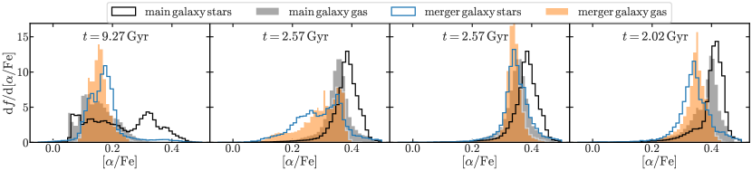
Appendix A توزيع وفرة الأكسجين
يقارن الشكل 10 دالة توزيع [/Fe] (MDF) للغاز (المدرج البرتقالي) والنجوم (المدرج الأزرق) في أربعة أقمار غنية بالغاز تندمج مع المجرة الرئيسية عند Gyr و Gyr و Gyr، مقارنة بـ MDF الغاز (المدرج الرمادي) والنجوم (المدرج الأسود) في المجرة المركزية عند الأزمنة المقابلة. ويُظهر هذا الشكل أن [/Fe] النجمية (المدرجات المفتوحة) لنجوم الاندماج أدنى مقارنة بنجوم المجرة الرئيسية، مع إزاحات متباينة إلى حد كبير بين و dex. وبالنظر بدلاً من ذلك إلى [/Fe] الغازية (المدرجات الممتلئة)، نجد أن الفرق بين غاز الاندماج وغاز المجرة الرئيسية أقل بروزاً. ونجد أكبر فرق للاندماج عند Gyr ( dex)، وتداخلاً كبيراً للاندماج المتأخر عند Gyr. أما الاندماجان عند Gyr فلا يُظهران إلا إزاحة طفيفة لغاز الاندماج نحو [/Fe] أدنى بمقدار مقارنة بالمجرة الرئيسية، مع أن اللوحة الثانية من اليسار تُظهر ذيلاً باتجاه [/Fe] أدنى بنحو dex.